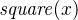
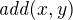
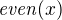
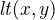
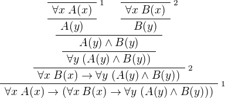
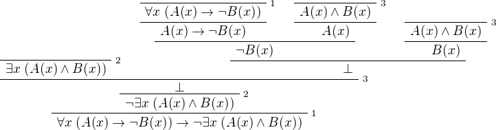
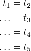

Logic and Proof
9 First Order Logic in Lean
9.1 Functions, Predicates, and Relations
In the last chapter, we discussed the language of first-order logic. We will see in the course of this book that Lean's built-in logic is much more expressive; but it includes first-order logic, which is to say, anything that can be expressed (and proved) in first-order logic can be expressed (and proved) in Lean.
Lean is based on a foundational framework called type theory, in which every variable is assumed to range elements of some type. You can think of a type as being a "universe," or a "domain of discourse," in the sense of first-order logic.
For example, suppose we want to work with a first-order language with
one constant symbol, one unary function symbol, one binary function
symbol, one unary relation symbol, and one binary relation symbol. We
can declare a new type U (for "universe") and the relevant symbols
as follows:
We can then use them as follows:
The check command tells us that the first four expressions have type
U, and that the last two have type Prop. Roughly, this means that
the first four expressions correspond to terms of first-order logic,
and that the last two correspond to formulas.
Note all the following:
- A unary function is represented as an object of type
U → Uand a binary function is represented as an object of typeU → U → U, using the same notation as for implication between propositions. - We write, for example,
f xto denote the result of applyingftox, andg x yto denote the result of applyinggtoxandy, again just as we did when using modus ponens for first-order logic. Parentheses are needed in the expressiong x (f c)to ensure thatf cis parsed as a single argument. - A unary predicate is presented as an object of type
U → Propand a binary function is represented as an object of typeU → U → Prop. You can think of a binary relationRas being a function that takes two arguments in the universe,U, and returns a proposition. - We write
P xto denote the assertion thatPholds ofx, andR x yto denote thatRholds ofxandy.
You may reasonably wonder what difference there is between a constant and a variable in Lean. The following declarations also work:
Although the examples function in much the same way, the constant
and variable commands do very different things. The constant
command declares a new object, axiomatically, and adds it to the list
of objects Lean knows about. In contrast, when it is first executed,
the variable command does not create anything. Rather, it tells Lean
that whenever we enter an expression using the corresponding
identifier, it should create a temporary variable of the corresponding
type.
Many types are already declared in Lean's standard library. For
example, there is a type written nat or ℕ, that denotes the
natural numbers:
You can enter the unicode ℕ with \nat or \N. The two expressions
mean the same thing.
Using this built-in type, we can model the language of arithmetic, as described in the last chapter, as follows:
We have used the namespace command to avoid conflicts with
identifiers that are already declared in the Lean library. (Outside
the namespace, the constant mul we just declared is named
hide.mul.) We can again use the check command to try them out:
We can even declare infix notation of binary operations and relations:
(Getting notation for numerals 1, 2, 3, … is trickier.) With
all this in place, the examples above can be rendered as follows:
In fact, all of the functions, predicates, and relations discussed
here, except for the "square" function and "prime," are defined in the
core Lean library. They become available to us when we put the commands
import data.nat and open nat at the top of a file in Lean.
Here, we declare the constants square and prime axiomatically, but
refer to the other operations and predicates in the Lean library. In
this book, we will often proceed in this way, telling you explicitly
what facts from the library you should use for exercises.
Again, note the following aspects of syntax:
- In contrast to ordinary mathematical notation, in Lean, functions
are applied without parentheses or commas. For example, we write
square xandadd x yinstead of  and . - The same holds for predicates and relations: we write
even xandlt x yinstead of  and , as one might do in symbolic logic. - The notation
add : ℕ → ℕ → ℕindicates that addition takes two arguments, both natural numbers, and returns a natural number. - Similarly, the notation
divides : ℕ → ℕ → Propindicates thatdividesis a binary relation, which takes two natural numbers as arguments and forms a proposition. In other words,divides x yexpresses the assertion thatxdividesy.
Lean can help us distinguish between terms and formulas. If we check
the expression x + y + 1 in Lean, we are told it has type ℕ, which
is to say, it denotes a natural number. If we check the expression
even (x + y + 1), we are told that it has type Prop, which is to
say, it expresses a proposition.
In Chapter 7 we considered many-sorted logic, where one can have multiple universes. For example, we might want to use first-order logic for geometry, with quantifiers ranging over points and lines. In Lean, we can model this as by introducing a new type for each sort:
We can then express that two distinct points determine a line as follows:
Notice that we have followed the convention of using iterated
implication rather than conjunction in the antecedent. In fact, Lean
is smart enough to infer what sorts of objects p, q, L, and M
are from the fact that they are used with the relation on, so we
could have written, more simply, this:
9.2 Using the Universal Quantifier
In Lean, you can enter the universal quantifier by writing \all. The
motivating examples from Section 7.1 are rendered as follows:
Remember that Lean expects a comma after the universal quantifier, and
gives it the widest scope possible. For example, ∀ x, P ∨ Q is
interpreted as ∀ x, (P ∨ Q), and we would write (∀ x, P) ∨ Q to
limit the scope. If you prefer, you can use the plain ascii expression
forall instead of the unicode ∀.
In Lean, then, the pattern for proving a universal statement is rendered as follows:
Read take x as "fix and arbitrary value x of U." Since we are
allowed to rename bound variables at will, we can equivalently write
either of the following:
This constitutes the introduction rule for the universal
quantifier. It is very similar to the introduction rule for
implication: instead of using assume to temporarily introduce an
assumption, we use take to temporarily introduce a new object,
y. (In fact, assume and take are both alternate syntax for a
single internal construct in Lean, which can also be denoted by λ.)
The elimination rule is, similarly, implemented as follows:
Observe the notation: P a is obtained by "applying" the hypothesis
H to a. Once again, note the similarity to the elimination rule
for implication.
Here is an example of how it is used:
Here is an even shorter version of the same proof, where we avoid
using have:
You should talk through the steps, here. Applying H1 to y yields a
proof of A y → B y, which we then apply to H2 y, which is a proof
of A y. The result is the proof of B y that we are after.
In the last chapter, we considered the following proof in natural deduction:

Here is the same proof rendered in Lean:
Here is an alternative version, using the "anonymous" versions of have:
The exercises below ask you to prove the barber paradox, which was discussed in the last chapter. You can do that using only propositional reasoning and the rules for the universal quantifer that we have just discussed.
9.3 Using the Existential Quantifier
In Lean, you can type the existential quantifier, ∃, by writing
\ex. If you prefer you can use the ascii equivalent, exists. The
introduction rule is exists.intro and requires two arguments: a
term, and a proof that that term satisfies the required property.
The elimination rule for the existential quantifier is given by the
obtain command. Given a term of type ∃x, P x we can use it to get
a new variable y and the assumption that P y holds.
You can often use obtain without specifying the type of the object
and the assumption. If you write obtain y H instead of obtain (y : U)
(H : P y) in the first line of the previous proof, that is also
accepted.
The following example uses both the introduction and the elimination rules for the existential quantifier.
Notice the parentheses in the hypothesis; if we left them out,
everything after the first ∃ x would be included in the scope of
that quantifier. From the hypothesis, we obtain a y that satisfies A y
∧ B y, and hence A y in particular. So y is enough to witness the
conclusion.
The following example is more involved:
Note again the placement of parentheses in the statement.
In the last chapter, we considered the following natural deduction proof:

Here is a proof of the same implication in Lean:
Here, the obtain command is used to get a value x satisfying A x
∧ B x. The name is arbitrary; we could just as well have used z:
Here is another example of the exists-elimination rule:
It is subtle: the proof does not go through if we do not declare a
variable u of type U, even though u does not appear in the
statement of the theorem. The semantics of first-order logic,
discussed in the next chapter, presuppose that the universe is
nonempty. In Lean, however, it is possible for a type to be empty, and
so the proof above depends on the fact that there is an element u in
U.
The obtain command is actually quite powerful. It can do nested
exists-eliminations, so that the second proof below is just a shorter
version of the first:
You can also use it to extract the components of an "and":
You can also introduce an anonymous hypothesis using backticks, and
then refer to it later on using backticks again, just as with the
anonymous have expression. However, we cannot use the keyword this
for variables introduced by obtain.
These features are all illustrated in the following example:
9.4 Equality and calculational proofs
In Lean, reflexivity, symmetry, and transitivity are called eq.refl,
eq.symm, and eq.trans, and the second substitution rule is called
eq.subst. Their uses are illustrated below.
The rule eq.refl above takes x as an argument, because there is no
hypothesis to infer it from. All the other rules take their premises
as arguments.
It is often the case, however, that Lean can figure out which instance
of reflexivity you have in mind from the context, and there is an
abbreviation, rfl, which does not take any arguments. Moreover, if
you type open eq.ops, there is additional convenient notation you
can use for symmetry, transitivity, and substitution:
You can type ⁻¹ using either \sy or \inv, for "symmetry" or
"inverse." You can type ⬝ using \tr, for transitivity, and you can
type ▸ using \t.
Here is an example:
This proof can be written more concisely:
Because calculation is so important in mathematics, however, Lean
provides more efficient ways of carrying them out. One is the
rewrite tactic. Typing begin and end in a Lean proof puts Lean
into "tactic mode," which means that Lean then expects a list of
instructions. The command rewrite then uses identities to change the
goal. For example, the previous proof could be written as follows:
The first command changes the goal x = z to y = z; the minus sign
before H1 tells Lean to use the equation in the reverse
direction. After that, we can finish the goal by applying H2.
An alternative is to rewrite the goal using H1 and H2, which
reduces the goal to x = x. When that happens, rewrite
automatically applies reflexivity.
In fact, a sequence of rewrites can be combined, using square brackets:
And when you reduce a proof to a single tactic, you can use by
instead of begin ... end.
We will see in the coming chapters that in ordinary mathematical proofs, one commonly carries out calculations in a format like this:

Lean has a mechanism to model calculational proofs like this. Whenever
a proof of an equation is expected, you can provide a proof using the
identifier calc, following by a chain of equalities and
justification, in the following form:
calc
e1 = e2 : justification 1
... = e3 : justification 2
... = e4 : justification 3
... = e5 : justification 4
The chain can go on as long as needed. Each justification is the name of the assumption or theorem that is used. For example, the previous proof could be written as follows:
As usual, the syntax is finicky; notice that there are no
commas in the calc expression, and the colons and dots need to be
entered exactly in that form. All that varies are the expressions e1,
e2, e3, ... and the justifications themselves.
The calc environment is most powerful when used in conjunction with
rewrite, since we can then rewrite expressions with facts from the
library. For example, Lean's library has a number of basic identities
for the integers, such as these:
You can also write the type of integers as ℤ, entered with either
\Z or \int. Notice that, for example, add.comm is the theorem ∀
x y, x + y = y + x. So to instantiate it to s + t = t + s, you
write add.comm s t. Using these axioms, here is the calculation
above rendered in Lean, as a theorem about the integers:
Using rewrite is more efficient, though at times we have to provide
information to specify where the rules are used:
In that case, we can use a single rewrite:
If you check the proof before the sequence of rewrites is
sufficient, the error message will display the remaining goal.
Here is another example:
Once again, we can get by with a shorter proof:
9.5 Exercises
Fill in the
sorry.section variable A : Type variable f : A → A variable P : A → Prop premise H : ∀ x, P x → P (f x) -- Show the following: example : ∀ y, P y → P (f (f y)) := sorry end Fill in the
sorry.section variable U : Type variables A B : U → Prop example : (∀ x, A x ∧ B x) → ∀ x, A x := sorry end Fill in the
sorry.section variable U : Type variables A B C : U → Prop premise H1 : ∀ x, A x ∨ B x premise H2 : ∀ x, A x → C x premise H3 : ∀ x, B x → C x example : ∀ x, C x := sorry end Fill in the
sorry's below, to prove the barber paradox.open classical -- not needed, but you can use it -- This is an exercise from Chapter 4. Use it as an axiom here. axiom not_iff_not_self (P : Prop) : ¬ (P ↔ ¬ P) example (Q : Prop) : ¬ (Q ↔ ¬ Q) := not_iff_not_self Q section variable Person : Type variable shaves : Person → Person → Prop variable barber : Person premise H : ∀ x, shaves barber x ↔ ¬ shaves x x -- Show the following: example : false := sorry end Fill in the
sorry.section variable U : Type variables A B : U → Prop example : (∃ x, A x) → ∃ x, A x ∨ B x := sorry end Fill in the
sorry.section variable U : Type variables A B : U → Prop premise H1 : ∀ x, A x → B x premise H2 : ∃ x, A x example : ∃ x, B x := sorry end Fill in the
sorry.variable U : Type variables A B C : U → Prop example (H1 : ∃ x, A x ∧ B x) (H2 : ∀ x, B x → C x) : ∃ x, A x ∧ C x := sorry Complete these proofs.
variable U : Type variables A B C : U → Prop example : (¬ ∃ x, A x) → ∀ x, ¬ A x := sorry example : (∀ x, ¬ A x) → ¬ ∃ x, A x := sorry Fill in the
sorry.variable U : Type variables R : U → U → Prop example : (∃ x, ∀ y, R x y) → ∀ y, ∃ x, R x y := sorry Do the following.
import data.nat open nat -- You can use the facts "odd_succ_of_even" and "odd_mul_of_odd_of_odd". -- Their use is illustrated in the next two examples. example (x : ℕ) (H1 : even x) : odd (x + 1) := odd_succ_of_even H1 example (x y : ℕ) (H1 : odd x) (H2 : odd y) : odd (x * y) := odd_mul_of_odd_of_odd H1 H2 -- Show the following: example : ∀ x y z : ℕ, odd x → odd y → even z → odd ((x * y) * (z + 1)) := sorry The following exercise shows that in the presence of reflexivity, the rules for symmetry and transitivity are equivalent to a single rule.
theorem foo {A : Type} {a b c : A} : a = b → c = b → a = c := sorry -- notice that you can now use foo as a rule. The curly braces mean that -- you do not have to give A, a, b, or c section variable A : Type variables a b c : A example (H1 : a = b) (H2 : c = b) : a = c := foo H1 H2 end section variable {A : Type} variables {a b c : A} -- replace the sorry with a proof, using foo and rfl, *without* using eq.symm. proposition my_symm (H : b = a) : a = b := sorry -- now use foo, rfl, and my_symm to prove transitivity proposition my_trans (H1 : a = b) (H2 : b = c) : a = c := sorry end Replace each "sorry" below by the correct axiom from the list.
import data.int open int -- these are the axioms for a commutative ring check @add.assoc check @add.comm check @add_zero check @zero_add check @mul.assoc check @mul.comm check @mul_one check @one_mul check @left_distrib check @right_distrib check @add.left_inv check @add.right_inv check @sub_eq_add_neg variables x y z : int theorem t1 : x - x = 0 := calc x - x = x + -x : sub_eq_add_neg ... = 0 : add.right_inv theorem t2 (H : x + y = x + z) : y = z := calc y = 0 + y : zero_add ... = (-x + x) + y : add.left_inv ... = -x + (x + y) : add.assoc ... = -x + (x + z) : H ... = (-x + x) + z : add.assoc ... = 0 + z : add.left_inv ... = z : zero_add theorem t3 (H : x + y = z + y) : x = z := calc x = x + 0 : sorry ... = x + (y + -y) : sorry ... = (x + y) + -y : sorry ... = (z + y) + -y : H ... = z + (y + -y) : sorry ... = z + 0 : sorry ... = z : sorry theorem t4 (H : x + y = 0) : x = -y := calc x = x + 0 : add_zero ... = x + (y + -y) : add.right_inv ... = (x + y) + -y : add.assoc ... = 0 + -y : H ... = -y : zero_add theorem t5 : x * 0 = 0 := have H1 : x * 0 + x * 0 = x * 0 + 0, from calc x * 0 + x * 0 = x * (0 + 0) : sorry ... = x * 0 : sorry ... = x * 0 + 0 : sorry, show x * 0 = 0, from t2 _ _ _ H1 theorem t6 : x * (-y) = -(x * y) := have H1 : x * (-y) + x * y = 0, from calc x * (-y) + x * y = x * (-y + y) : sorry ... = x * 0 : sorry ... = 0 : t5 x, show x * (-y) = -(x * y), from t4 _ _ H1 theorem t7 : x + x = 2 * x := calc x + x = 1 * x + 1 * x : one_mul ... = (1 + 1) * x : sorry ... = 2 * x : rfl